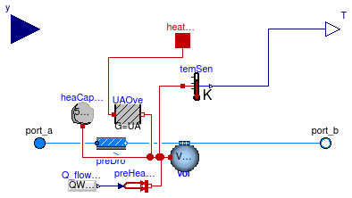

Package with boiler models
Extends from Modelica.Icons.VariantsPackage (Icon for package containing variants).
| Name | Description |
|---|---|
| BoilerPolynomial | Boiler with efficiency curve described by a polynomial of the temperature |
| Collection of models that illustrate model use and test models |
Boiler with efficiency curve described by a polynomial of the temperature

This is a model of a boiler whose efficiency is described by a polynomial. The heat input into the medium is
Q̇ = y Q̇0 η ⁄ η0
where
y ∈ [0, 1] is the control signal,
Q̇0 is the nominal power,
η is the efficiency at the current operating point, and
η0 is the efficiency at y=1 and
nominal temperature T=T0 as specified by the parameter
T_nominal.
The parameter effCur determines what polynomial is used
to compute the efficiency, which is defined as
η = Q̇ ⁄ Q̇f,
where Q̇ is the heat transferred to the working fluid (typically water or air), and Q̇f is the heat of combustion released by the fuel.
The following polynomials can be selected to compute the efficiency:
Parameter effCur |
Efficiency curve |
|---|---|
| Buildings.Fluid.Types.EfficiencyCurves.Constant | η = a1 |
| Buildings.Fluid.Types.EfficiencyCurves.Polynomial | η = a1 + a2 y + a3 y2 + ... |
| Buildings.Fluid.Types.EfficiencyCurves.QuadraticLinear | η = a1 + a2 y + a3 y2 + (a4 + a5 y + a6 y2) T |
where T is the boiler outlet temperature in Kelvin.
For effCur = Buildings.Fluid.Types.EfficiencyCurves.Polynomial,
an arbitrary number of polynomial coefficients can be specified.
The parameter Q_flow_nominal is the power transferred to the fluid
for y=1 and, if the efficiency depends on temperature,
for T=T0.
The fuel mass flow rate and volume flow rate are computed as
ṁf = Q̇f ⁄ hf
and
V̇f = ṁf ⁄ ρf,
where the fuel heating value
hf and the fuel mass density
ρf are obtained from the
parameter fue.
Note that if η is the efficiency relative to the lower heating value,
then the fuel properties also need to be used for the lower heating value.
Optionally, the port heatPort can be connected to a heat port
outside of this model to impose a boundary condition in order to
model heat losses to the ambient. When using this heatPort,
make sure that the efficiency curve effCur
does not already account for this heat loss.
On the Assumptions tag, the model can be parameterized to compute a transient or steady-state response. The transient response of the boiler is computed using a first order differential equation to compute the boiler's water and metal temperature, which are lumped into one state. The boiler outlet temperature is equal to this water temperature.
Extends from Interfaces.TwoPortHeatMassExchanger (Partial model transporting one fluid stream with storing mass or energy).
| Type | Name | Default | Description |
|---|---|---|---|
| replaceable package Medium | PartialMedium | Medium in the component | |
| Power | Q_flow_nominal | Nominal heating power [W] | |
| Temperature | T_nominal | 353.15 | Temperature used to compute nominal efficiency (only used if efficiency curve depends on temperature) [K] |
| EfficiencyCurves | effCur | Buildings.Fluid.Types.Effici... | Curve used to compute the efficiency |
| Real | a[:] | {0.9} | Coefficients for efficiency curve |
| Generic | fue | Fuel type | |
| ThermalConductance | UA | 0.05*Q_flow_nominal/30 | Overall UA value [W/K] |
| Nominal condition | |||
| MassFlowRate | m_flow_nominal | Nominal mass flow rate [kg/s] | |
| Pressure | dp_nominal | Pressure difference [Pa] | |
| Initialization | |||
| MassFlowRate | m_flow.start | 0 | Mass flow rate from port_a to port_b (m_flow > 0 is design flow direction) [kg/s] |
| Pressure | dp.start | 0 | Pressure difference between port_a and port_b [Pa] |
| Assumptions | |||
| Boolean | allowFlowReversal | true | = true to allow flow reversal, false restricts to design direction (port_a -> port_b) |
| Advanced | |||
| MassFlowRate | m_flow_small | 1E-4*abs(m_flow_nominal) | Small mass flow rate for regularization of zero flow [kg/s] |
| Boolean | homotopyInitialization | true | = true, use homotopy method |
| Diagnostics | |||
| Boolean | show_T | true | = true, if actual temperature at port is computed |
| Flow resistance | |||
| Boolean | from_dp | false | = true, use m_flow = f(dp) else dp = f(m_flow) |
| Boolean | linearizeFlowResistance | false | = true, use linear relation between m_flow and dp for any flow rate |
| Real | deltaM | 0.1 | Fraction of nominal flow rate where flow transitions to laminar |
| Dynamics | |||
| Nominal condition | |||
| Time | tau | VWat*rho_default/m_flow_nomi... | Time constant at nominal flow (if energyDynamics <> SteadyState) [s] |
| Equations | |||
| Dynamics | energyDynamics | Modelica.Fluid.Types.Dynamic... | Formulation of energy balance |
| Dynamics | massDynamics | energyDynamics | Formulation of mass balance |
| Volume | VWat | 1.5E-6*Q_flow_nominal | Water volume of boiler [m3] |
| Mass | mDry | 1.5E-3*Q_flow_nominal | Mass of boiler that will be lumped to water heat capacity [kg] |
| Initialization | |||
| AbsolutePressure | p_start | Medium.p_default | Start value of pressure [Pa] |
| Temperature | T_start | Medium.T_default | Start value of temperature [K] |
| MassFraction | X_start[Medium.nX] | Medium.X_default | Start value of mass fractions m_i/m [kg/kg] |
| ExtraProperty | C_start[Medium.nC] | fill(0, Medium.nC) | Start value of trace substances |
| Type | Name | Description |
|---|---|---|
| FluidPort_a | port_a | Fluid connector a (positive design flow direction is from port_a to port_b) |
| FluidPort_b | port_b | Fluid connector b (positive design flow direction is from port_a to port_b) |
| input RealInput | y | Part load ratio |
| HeatPort_a | heatPort | Heat port, can be used to connect to ambient |
| output RealOutput | T | [K] |